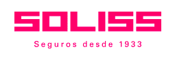

RESULTADO QUE QUEREMOS EXPLICAR
—
Estas capacidades no deberían reconstruirse dentro de cada vertical.
→
→

La misma propuesta, con el nivel de detalle adecuado para cada momento.
Keedio propone P0 como proyecto único: una plataforma gobernada y reutilizable. Los UC1–UC7 se activan después mediante business case y Go/No-Go.
EIOPA confirma que el sector asegurador europeo ya ha entrado en adopción, pero la mayoría de casos sigue atrapada entre PoC y producción.
La propuesta de Keedio conecta industrialización tecnológica con una experiencia donde el profesional Soliss sigue siendo central.
La propuesta de Keedio usa la tecnología como amplificador de cercanía, solvencia, control y arraigo; no como sustituto indiscriminado de la relación humana.
Cada decisión muestra quién la toma, cuándo, qué desbloquea y qué riesgo aparece si se difiere.
Aprobar P0 como infraestructura crítica, activar F0, nombrar responsable transversal Soliss y condicionar el avance a G1–G4.
Simulación conceptual del patrón objetivo. No representa pruebas ejecutadas: los resultados reales se obtienen en F3/F4 y quedan como evidencia.
La matriz es un patrón propuesto por Keedio. Las excepciones externas deben aprobarse por caso, proveedor, clasificación de datos y contrato.
Esta sección separa la base común P0 de las soluciones de negocio UC1–UC7 y permite cambiar entre lenguaje claro y detalle técnico.
El mismo patrón común puede reutilizarse en distintos UC, cambiando fuentes, reglas y lógica funcional.
P0 deja preparado el patrón; el caso derivado concreta proceso, datos, integración, usuarios y criterios productivos.
Los recorridos son ilustrativos: explican cómo se reutiliza la plataforma y dónde empieza el desarrollo del caso derivado. No amplían el alcance contractual.
Estas capacidades no deberían reconstruirse dentro de cada vertical.
La parte común debe resolverse una vez en P0. La lógica del proceso, datos concretos, reglas y experiencia de usuario se desarrollan en cada UC posterior.
P0 = reutilización + gobierno · UC = valor funcional específicoNo comparamos “Soliss actual” contra una situación ideal. Comparamos dos formas de abordar un nuevo vertical: resolverlo como isla o incorporarlo a una Factory con capacidades comunes.
Un nuevo UC no se considera “listo” por funcionar en una demo. Debe demostrar valor, autorización de datos, control de modelos/herramientas, seguridad, UAT, evidencia y capacidad operativa.
REQUIRED / OPTIONAL / DEPENDS describe dependencia arquitectónica propuesta; no amplían el alcance contractual.
Baseline y target permanecen N/D hasta disponer de workshop/datos reales.
El nivel de automatización se decide por caso, riesgo y control; P0 no impone autonomía ciega.
Cada UC debe iniciar con baseline → target → actual → evidencia → owner. Aquí solo se definen KPI candidatos; los valores son N/D hasta el workshop Soliss.
El simulador evita confundir el contrato de servicios con el CAPEX que Soliss adquiere directamente.
Estados de propuesta y evidencia. No se muestran porcentajes de cumplimiento ni se presume validación jurídica.
La capa de assurance combina expectativas sectoriales EIOPA, DORA, AI Act y referencias de gestión/seguridad. Es un mapa de preparación, no una afirmación de certificación ni cumplimiento automático.
Los asistentes interactivos cubiertos por Art. 50 deben identificar claramente que el usuario está interactuando con IA. Keedio propone que esta transparencia sea una capability del canal, no una corrección posterior.
EIOPA identifica claims management —incluida la digitalización— como Area for Attention 2026. P0 debería instrumentar cycle time, overrides humanos, quejas/excepciones y fairness junto con productividad.
Un “Claims Assurance Pack” antes de productivizar UC3: HITL, trazabilidad, métricas de errores, explicabilidad y monitorización de consumer outcomes.
La trazabilidad evita que un riesgo exista aislado de la acción que lo cierra.
Si UC futuros pasan de “asistentes” a agentes que ejecutan acciones, Keedio propone bloquear producción hasta demostrar seis condiciones mínimas.
OWASP GenAI / Agentic · patrón de referenciaSimulador local para preparar comité. Las casillas no reflejan estado real del proyecto y no se sincronizan con sistemas Soliss.
R = Responsible · A = Accountable · C = Consulted · I = Informed. Matriz de trabajo para cierre contractual.
Descarga los documentos de propuesta, distingue el baseline de los materiales de soporte y conserva la integridad de cada fichero mediante SHA‑256.
Incluye Plan Director, presentación, presupuestos, cronograma, propuesta reestructurada y manifest de integridad.
Todo se genera localmente en el navegador. La exportación recoge el escenario TCO, priorización UC, estado de evidencias y checklist G1–G4 en ese momento.
Las cifras mostradas por la Decision Room se gobiernan desde estas fuentes para evitar mezclar revisiones anteriores.
Permite verificar que el documento descargado es exactamente el distribuido con esta versión de la web.
La vista pública usa un bundle sin economics ni catálogo documental. El Boardroom carga recursos desde /private tras autenticación; el hosting debe validar también ese acceso.
La siguiente decisión no es comprar siete soluciones. Es aprobar la base que permite desplegarlas con gobierno, seguridad, trazabilidad y un modelo operativo transferible.